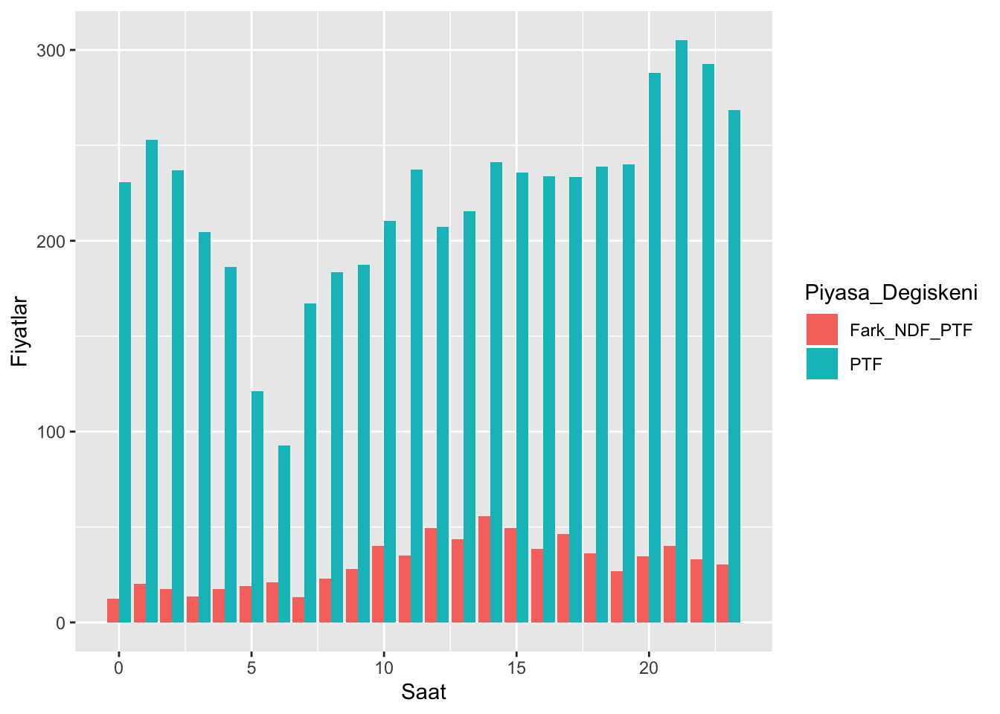
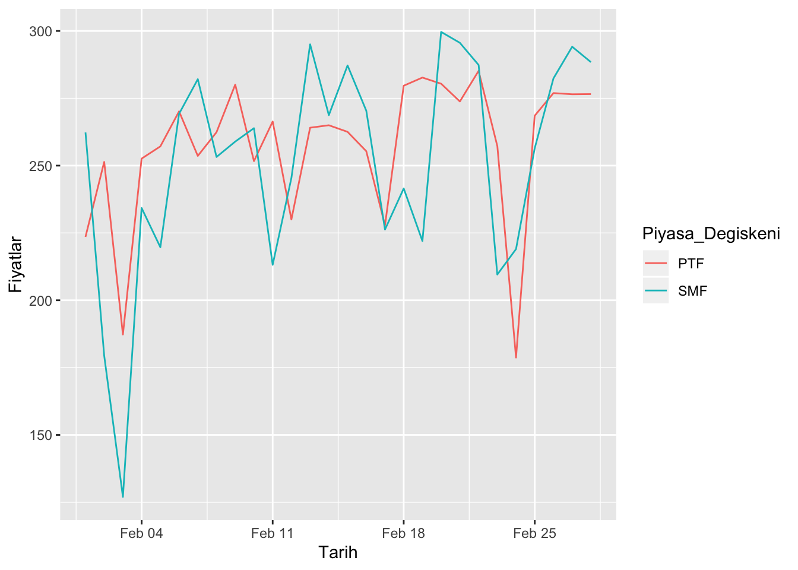
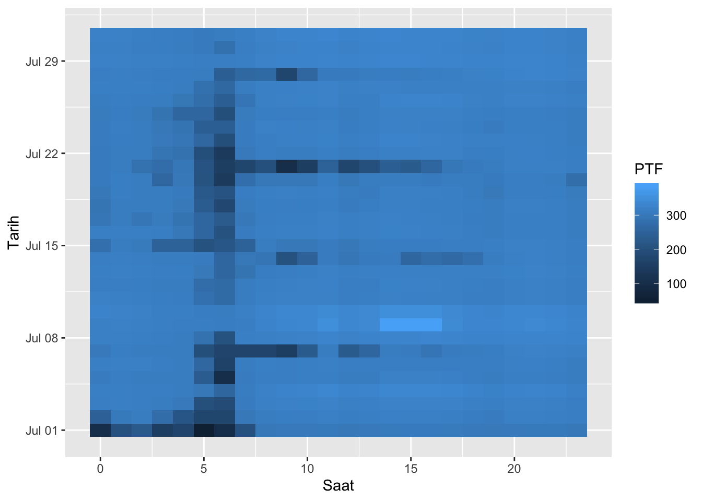

3 ggplot2 ile Veri Görselleştirme
Bu bölümde ggplot2 paketinden yararlanarak veri görselleştirmenin nasıl yapılabileceği farklı fonksiyonlar ve örnekler üzerinden gösterilecektir.
3.1 Hazırlıklar
Bu bölüme başlamadan önce yapılması gereken ggplot2 paketini indirmek ve yüklemek. Paketi indirmek için install.packages("ggplot2") , paketi yüklemek için ise library(ggplot2) komutları kullanılabilir. (Veri setini indirmediyseniz lütfen Veri Seti bölümünü ziyaret ediniz.)
# ggplot2 paketinin indirilmesi
install.packages("ggplot2")
# ggplot2 paketinin yüklenmesi
library(ggplot2)dplyr paketinde birden fazla fonksiyonu aynı veri setine uygulamak için “Bağlantı Operatörü” (%>%) kullanılırken ggplot2 paketinde ise birden fazla etkiyi aynı ayna uygulamak için (+) operatörü kullanılıyor. Bu durum başlangıç grafiğinin üzerine farklı görseller eklenmesi olarak düşünülebilir.
3.2 Nokta Grafiği (Scatter Plot)
İlk olarak bahsedilecek grafik türü olan “Scatter Plot” temel olarak var olan verinin noktasal dağılımını göstermek için kullanılır. Burada ggplot fonksiyonu ile de ilk kez karşılaşıldığından bazı özelliklerinden bahsedilmelidir. Fonksiyonun içine ilk yazılan parametre kullanılacak verinin ismidir. Daha sonra aes() yardımıyla grafiğin x ve y koordinatları belirlenir. aes() içerisinde ayrıca color, fill, alpha, shape, size gibi özellikler de belirlenebilir.
“Scatter Plot” için kullanılan fonksiyon ise geom_point()tir. “x” ekseninde “PTF”, “y” ekseninde ise “SMF” değerleri renkleri günlere göre değişecek şekilde gösterilirse (Öncelikle gün sütunu ekleniyor.),
Görülebileceği üzere öncelikle veri seti, sonrasında ise aes() içerisinde x ve koordinatları ile renk belirlendi.
Grafiği görsel olarak daha güzel hale getirmek için öncelikle arka plandaki gri kısım theme_minimal() fonksiyonu yardımıyla kaldırılabilir.
Grafiğin ve eksenlerinin ismini değiştirmek, x eksenindeki yazıları döndürmek ve lejantı istenilen şekilde konumlamak için aşağıdakiler uygulanmalıdır.
3.3 Sütunlu Grafik (Bar Chart)
“Bar Chart”ta ise veriler sütunlarda gösterilir. “Scatter Plot”taki geom_point() yerine geom_bar() fonksiyonu, aes() içerisinde color yerine ise fill kullanılır. (Burada geom_bar içerisinde stat="identity" yazılması zorunludur.)
Örneğin Negatif Dengesizlik Fiyatı’nın ne kadarının PTF’den ne kadarının ceza payından geldiği Haziran ayı için saatlere göre incelenmek isteniyorsa (Öncelikle veri manipülasyonu gerçekleştiriliyor.),
plot_df <- ptfsmf %>%
mutate(Saat = hour(Tarih), Tarih = as.Date(Tarih), Fark_NDF_PTF = NDF - PTF) %>%
filter(Tarih>"2019-05-31" & Tarih<"2019-07-01") %>%
group_by(Saat) %>%
summarise(PTF = mean(PTF), Fark_NDF_PTF = mean(Fark_NDF_PTF)) %>%
ungroup() %>%
pivot_longer(cols=c(PTF, Fark_NDF_PTF),
names_to="Piyasa_Degiskeni", values_to="Fiyatlar")
plot_df## # A tibble: 48 x 3
## Saat Piyasa_Degiskeni Fiyatlar
## <int> <chr> <dbl>
## 1 0 PTF 231.
## 2 0 Fark_NDF_PTF 12.4
## 3 1 PTF 253.
## 4 1 Fark_NDF_PTF 20.2
## 5 2 PTF 237.
## 6 2 Fark_NDF_PTF 17.4
## 7 3 PTF 205.
## 8 3 Fark_NDF_PTF 13.6
## 9 4 PTF 186.
## 10 4 Fark_NDF_PTF 17.4
## # … with 38 more rowsBu şekilde bir tablo ortaya çıktı. Şimdi grafiği çizdirmek için,
Bu grafiği yüzdesel oranlarına göre tam olarak sığdırmak için ise,
ggplot(plot_df, aes(x=Saat, y=Fiyatlar, fill=Piyasa_Degiskeni)) +
geom_bar(stat="identity", position="fill")
Son olarak da daha aşina olunduğu üzere sütunları yan yana yerleştirmek için (yukarıda yapılan güzelleştirme operasyonları da uygulanırsa),
ggplot(plot_df, aes(x=Saat, y=Fiyatlar, fill=Piyasa_Degiskeni)) +
geom_bar(stat="identity", position="dodge") +
labs(x = "Saatler",
y = "Fiyatlar") +
scale_x_discrete(limits=c(0:23)) +
theme(axis.text.x = element_text(angle = 45), legend.position = "top",
legend.title = element_blank())Son iki grafikte dikkat edilmesi gereken nokta sütunları dikeyde oranları göz önüne alınarak sığdırmak için position="fill", yan yana yerleştirmek için ise position="dodge" kullanılır.
3.4 Çizgi Grafiği (Line Chart)
“Line Chart”larda ise tahmin edilebileceği üzere geom_line() kullanılacaktır. Örneğin Şubat ayı saatlik ortalama PTF ve SMF değerleri incelenmek isteniyor. Önce veri manipülasyonu yapılırsa,
plot_df <- ptfsmf %>%
mutate(Tarih = as_date(Tarih)) %>%
filter(Tarih>"2019-01-31" & Tarih<"2019-03-01") %>%
group_by(Tarih) %>%
summarise(PTF = mean(PTF), SMF = mean(SMF)) %>%
ungroup() %>%
gather(key=Piyasa_Degiskeni, value=Fiyatlar, -c(Tarih))Bu şekilde bir tablo ortaya çıkıyor. Şimdi grafik çizdirilirse,
Yine daha güzel görünümlü bir grafik elde etmek için gerekli fonksiyonlar da yazılırsa,
ggplot(plot_df, aes(x=Tarih, y=Fiyatlar, color=Piyasa_Degiskeni)) +
geom_line() +
theme_minimal() +
labs(x = "Tarih",
y = "Fiyatlar") +
scale_x_date(date_breaks = "1 day", date_labels = "%m/%d") +
theme(axis.text.x = element_text(angle = 45), legend.position = "top",
legend.title = element_blank())
3.5 Isı Harıtası (Heat Map)
Bu grafik türünde ise iki farklı değişken baz alınarak temelde gözlenmek istenen değişkeni farklı renk tonlarında göstererek incelenmesi hedefleniyor. Bu işlem için ise geom_tile() fonksiyonu kullanılıyor ve asıl olarak gösterilmek istenen değişken fill fonksiyonuna veriliyor.
Örneğin temmuz ayı için x ekseninde saatler, y ekseninde ise ayın günleri olacak şekilde Piyasa Takas Fiyatı (PTF) değişkeninin ısı grafiği için (Öncelikle veri manipülasyonu yapılıyor.),
plot_df <- ptfsmf %>%
mutate(Saat = hour(Tarih), Tarih = as_date(Tarih)) %>%
filter(Tarih>"2019-06-30" & Tarih<"2019-08-01") %>%
select(Saat, Tarih, PTF)Güzelleştirmek için yukarıdaki fonksiyonlar eklenirse,
ggplot(plot_df, aes(x=Saat, y=Tarih, fill=PTF)) +
geom_tile() +
labs(x = "Saatler",
y = "Günler") +
scale_y_date(date_breaks = "5 day", date_labels = "%m/%d") +
scale_x_discrete(limits=c(0:23)) +
theme(axis.text.x = element_text(angle = 45), legend.position = "top",
legend.title = element_blank())
Isı grafiğinin rengi değiştirilmek istenirse ise scale_fill_gradient fonksiyonu içerisinde iki renk belirtilerek aralarındaki renkler kullanılabilir.
ggplot(plot_df, aes(x=Saat, y=Tarih, fill=PTF)) +
geom_tile() +
scale_fill_gradient(low="white", high="red") +
labs(x = "Saatler",
y = "Günler") +
scale_y_date(date_breaks = "5 day", date_labels = "%m/%d") +
scale_x_discrete(limits=c(0:23)) +
theme(axis.text.x = element_text(angle = 45), legend.position = "top",
legend.title = element_blank())